Habilitador y acelerador de procesos y arquitecturas de solución que fortalecen la cadena de valor público y acercan sus servicios al ciudadano.
Cargando la escena 3D…
Valor+ · Gemelo digital de Antioquia
Tecnología que llega a cada territorio
Integramos conectividad, seguridad, datos y energía para que las entidades públicas de Antioquia presten mejores servicios a la ciudadanía.
Selecciona un municipio en el mapa o búscalo por su nombre.
Sedes conectadasCámaras integradas
En línea · simulación
- Sede educativa en línea · Ituango
- Cámaras reportando al nodo · Medellín
- Sede educativa en línea · Turbo
- Cámaras reportando al nodo · Maceo
- Sede educativa en línea · Vigía del Fuerte
- Cámaras reportando al nodo · Angostura
- Sede educativa en línea · Tarazá
- Cámaras reportando al nodo · La Estrella
- Sede educativa en línea · Dabeiba
- Cámaras reportando al nodo · La Unión
- Sede educativa en línea · Sonsón
- Cámaras reportando al nodo · Betania
Impacto
Resultados que se ven en el territorio
Toca una cifra para explorarla.
Sedes por tecnología
Ver los datos en tabla
| Tecnología | Sedes | % |
|---|
Cámaras y municipios por subregión
Ver los datos en tabla
| Subregión | Cámaras | Municipios |
|---|
Municipios integrados a la red, por subregión
Oriente 9
Abejorral, Argelia, Cocorná, La Unión, Rionegro, San Carlos, San Francisco, San Luis, Sonsón
Suroeste 7
Andes, Betania, Betulia, Ciudad Bolívar, Salgar, Titiribí, Urrao
Valle de Aburrá 6
Barbosa, Bello, Caldas, Girardota, La Estrella, Medellín
Norte 6
Angostura, Briceño, Ituango, Santa Rosa de Osos, Valdivia, Yarumal
Occidente 5
Abriaquí, Dabeiba, Frontino, Peque, Santa Fe de Antioquia
Nordeste 4
Amalfi, Anorí, Remedios, Segovia
Bajo Cauca 4
Caucasia, Cáceres, El Bagre, Tarazá
Urabá 4
Murindó, Mutatá, Turbo, Vigía del Fuerte
Magdalena Medio 3
Maceo, Puerto Berrío, Yondó
Totales de referencia de las fichas de proyecto; la distribución por municipio es ilustrativa para el prototipo.
Presencia por subregión
Ver los datos en tabla
| Subregión | Sedes conectadas | Cámaras integradas |
|---|
Cifras de referencia de las fichas de proyecto.
Conoce más sobre nosotros
Diez años integrando tecnología para el sector público
Creadores e integradores de soluciones basadas en tecnología y procesos, que contribuyen a la generación de valor en las empresas y entidades públicas, facilitando su transformación digital y contribuyendo a un futuro inclusivo y sostenible.
Para 2027, seremos un referente en la integración de soluciones tecnológicas y sostenibles en la gestión pública. Transformaremos el sector público mediante tecnologías avanzadas y prácticas innovadoras que mejoren la eficiencia, la transparencia y el servicio a la ciudadanía.
Servicios
Nuestra tecnología a su servicio
Estrategias tecnológicas del recaudo
- Gestión de liquidación de impuestos
- Apoyo a la gestión del cobro persuasivo, coactivo y acuerdos de pago
- Actualización de bases de datos fiscales
Automatización de la información
- Catastro multipropósito
- Levantamiento, procesamiento y análisis de datos en el territorio
- Telegestión
- Transformación digital de la gestión documental
Estructuración y gerenciamiento de proyectos
- Gerenciamiento de proyectos
- Prestación de servicios de la naturaleza de los centros de servicios compartidos
Soluciones tecnológicas y consultoría especializada
- Datacenter
- Migración a protocolo IPv6
- Licenciamiento
- Hardware y software
- Mesa de servicios
- Conectividad
- Ciberseguridad
- Especialistas SAP
- Contact Center
Seguridad
- Centros de monitoreo y control
- Circuitos cerrados de televisión (CCTV)
- Sistemas de control de acceso
Soluciones energéticas en tecnologías limpias
- Soluciones fotovoltaicas
- Iluminación eficiente
- Energías renovables
Proyectos
Explora nuestros proyectos en 3D
Cada proyecto tiene su propia escena 3D. Empieza por los dos recorridos inmersivos.
Experiencia inmersiva
Conectividad satelital para la ruralidad
Antenas de órbita baja que conectan sedes educativas donde la fibra no llega.
Recorrer en 3DExperiencia inmersiva
Red departamental de seguridad
Cámaras en 48 municipios conectadas a un nodo departamental de monitoreo.
Recorrer en 3DRecaudo
Recaudo del impuesto vehicular de Antioquia
Operar y apoyar los servicios tecnológicos utilizando la plataforma ERP SAP y el portal web, para el correcto funcionamiento del impuesto vehicular…
Ver proyectoRecaudo
Recaudo de comparendos del Departamento de Antioquia
Implementar recursos tecnológicos y operativos para la ejecución y evolución de sus actividades bajo una estrategia de transformación del proceso de…
Ver proyectoRecaudo
Recaudo ICA y predial de Medellín
Prestar los servicios de apoyo integral para la cobranza, comunicación, notificación y demás actividades requeridas frente a los documentos emitidos…
Ver proyectoRecaudo
Recaudo de fotomultas de Movilidad Medellín
Prestar los servicios de apoyo integral a las notificaciones al proceso del debido cobrar de la secretaría de movilidad
Ver proyectoAutomatización
Concesión Catastro Antioquia
Apoyo tecnológico y operativo a la Dirección de Catastro del Departamento de Antioquia, con el fin de modernizar los servicios catastrales basados en…
Ver proyectoAutomatización
Actualización catastral
Mandato sin representación para el proyecto autonomía territorial y fortalecimiento fiscal de los municipios que hacen parte de catastro Antioquia,…
Ver proyectoAutomatización
Gestión documental
Prestar el servicio de gestión documental integral para el Departamento de Antioquia y la Contraloría General.
Ver proyectoAutomatización
Gestión territorial ADR
Constitución de un fondo especial de administración de recursos, destinados por la Agencia de Desarrollo Rural, a la actualización del Registro…
Ver proyectoAutomatización
Telegestión avenida Las Palmas
Modernización del sistema de Telegestión para el alumbrado público de la Vía Las Palmas
Ver proyectoProyectos
Conectividad a internet satelital
Implementación de estrategias para la transformación digital en el Departamento de Antioquia.
Ver proyectoProyectos
CrediAntioquia
Prestación del servicio de apoyo tecnológico y operativo para la gestión de cobro persuasivo y recaudo de la cartera producto de los créditos…
Ver proyectoProyectos
Infraestructura vial
El IDEA apoya la estructuración de proyectos de inversión promovidos por el Departamento de Antioquia destinado recursos en este contrato para apoyar…
Ver proyectoProyectos · Seguridad
Mantenimiento de CCTV
Contrato interadministrativo de administración delegada para mantenimiento preventivo, correctivo y soporte técnico del sistema integrado de…
Ver proyectoConsultoría
Mesa de servicios
Prestar el servicio para la administración y operación de la Mesa de Servicios de la Gobernación de Antioquia MEGANT, servicios de hosting…
Ver proyectoConsultoría
Conectividad en sedes educativas
Implementación de estrategias para la transformación digital en el Departamento de Antioquia.
Ver proyectoConsultoría
Software – IU Digital
Proveer soluciones de software personalizadas que respondan de manera óptima a las necesidades del mercado, con especialización en el sector público.…
Ver proyectoConsultoría
Contact Center
Unidad Prestadora De Salud Antioquia requiere la contratación del servicio de CONTACT CENTER con el objeto de brindar atención a 51197 usuarios en…
Ver proyectoConsultoría
Consultores especializados en SAP
Servicios para la administración y operación de la Mesa de Servicios de la Gobernación de Antioquia, servicios de hosting corporativos y servicios de…
Ver proyectoSeguridad
Nodos para la seguridad
Gerenciar la implementación,sostenimiento y operación de tecnología para la seguridad en los municipios del departamento de Antioquia
Ver proyectoEnergía
Energía por Antioquia
Transición e implementación de nuevas soluciones energéticas orientado al desarrollo de territorios seguros, sostenibles y equitativos.
Ver proyectoOpinión · Última columna
Impuesto vehicular, Valor+ y política social
“Antioquia no ha dejado de generar ideas, programas, proyectos e instituciones que responden a solución de situaciones cotidianas…”
Explora el recaudo del impuesto vehicular
Datos publicados en la columna. Mueve el control o presiona reproducir.
—recaudo total del año
- Impuesto
- —
- Sanción
- —
- Intereses
- —
Ver los datos en tabla
| Año | Impuesto | Sanción | Intereses | Total |
|---|---|---|---|---|
| 2021 | $ 376.632.596.679 | $ 44.899.990.554 | $ 12.733.484.493 | $ 433.058.750.158 |
| 2022 | $ 434.896.318.118 | $ 40.455.473.025 | $ 11.765.321.199 | $ 487.117.938.974 |
| 2023 | $ 537.732.352.690 | $ 48.732.889.382 | $ 14.721.378.927 | $ 601.186.620.999 |
| 2024 | $ 639.871.865.542 | $ 48.270.981.515 | $ 20.415.151.546 | $ 708.557.998.603 |
| 2025 | $ 740.815.600.181 | $ 58.131.831.395 | $ 20.875.930.240 | $ 819.823.361.816 |
| 2026 | $ 859.475.371.877 | $ 67.624.457.200 | $ 23.938.635.580 | $ 951.038.464.657 |
Acerca del equipo
Personas que impulsan la transformación digital
Nuestro equipo de expertos en tecnología está comprometido con la excelencia, trabajando juntos para impulsar su éxito con soluciones innovadoras.
Conoce al equipo directivoTransparencia y atención
Información pública y PQRSD a un clic
Ley 1712 de 2014 · ITA
PQRSDTransparencia y acceso a la información pública
2.344 documentos en 13 categorías
1 Información de la entidad2 Normativa3 Contratación4 Planeación, presupuesto e informes5 Trámites6 Participa7 Datos abiertos8 Información específica para grupos de interés9 Obligación de reporte de información específica10 Información tributaria en entidades territoriales locales11 Atención y servicios a la ciudadanía12 Noticias13 Condiciones técnicas mínimas y de seguridad web
Radica tu petición, queja, reclamo, sugerencia o denuncia
Asistente en 4 pasos, consulta del estado y encuesta de satisfacción.
Radicar ahora Consulta¿Ya radicaste?
Consulta el estado con tu número de radicado.
Consultar ParticipaRendición de cuentas
Estrategia, calendario e informes.
ParticiparOportunidades
Trabaja y crece con Valor+
Registro de proveedores
Permítenos conocer tus servicios para entregar + valor a nuestra gestión.
InscribirmeTrabaja con nosotros
Únete a nuestro equipo de trabajo.
Enviar hoja de vidaConvocatorias públicas y abreviadas
29 procesos publicados con sus documentos.
Ver convocatoriasInvitaciones abiertas
3 invitaciones para aliados proveedores.
Ver invitacionesConfían en nosotros
Nuestros clientes
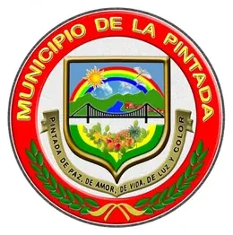
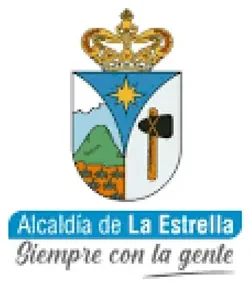
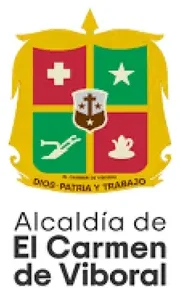
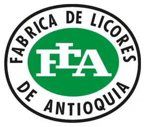
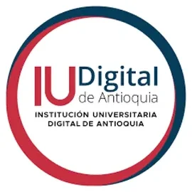
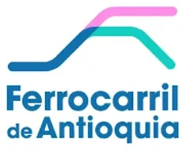
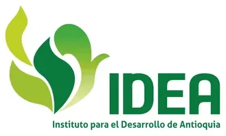
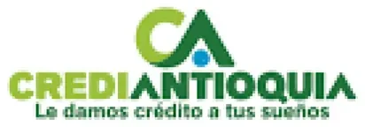
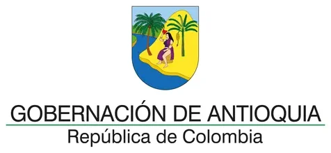
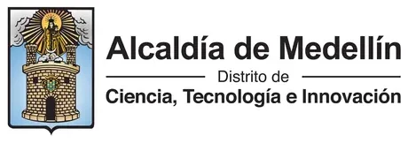
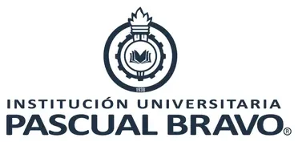
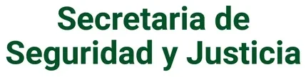
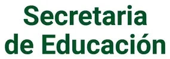
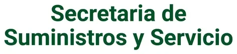
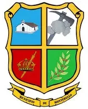